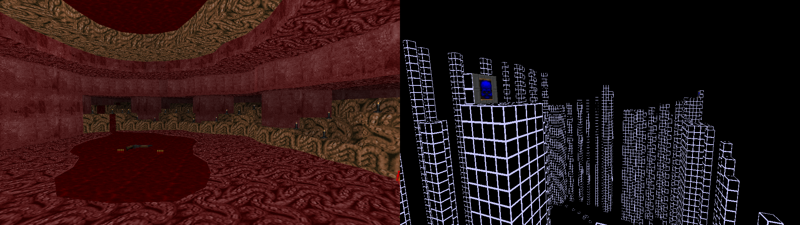

DOWNLOAD LINKS


| Year | 2021 |
| IWAD | doom2.wad |
| Source port | Boom-compatible |
| Game mode(s) | Single-player, Coop (partial), DM (partial) |
| Map(s) contributed | MAP06, MAP31 |
| Other contributions | Graphics, *MAPINFO, project lead |
3×3: Take Two is a spiritual sequel to the first 3×3 community project. Hosted by Yours Truly over April of 2021, the core idea was largely the same: a maximum of 3 flats, 3 textures and 3 enemy types was allowed per map. Participating mappers were also allowed to make up to 2 maps each. The final mapset contains in all 30 maps from 22 different authors.
My own two mapping contributions to the project were MAP06 and MAP31. The former is “The Devils’ Gut”, a fleshy Hell map with Imps, Demons and Revenants wandering about its corners, as well as acidic blood pools. Don’t stand in them for too long, lest you turn into mince meat. The latter is “Tightrope”, a platforming-focused mini-challenge consisting of two 1024×1024-sized areas. The first one has you pressing a series of buttons in order to reveal the path to the teleporter, while in the latter, you must press a few more buttons to raise the path to the exit while dodging Cyberdemon rockets. Or Baron fireballs if you’re playing on the easier difficulties.
In addition to hosting the project and making the aforementioned maps for it, I also made the graphics and the MAPINFO and DEHACKED lumps. The final mapset was also compiled by Yours Truly.